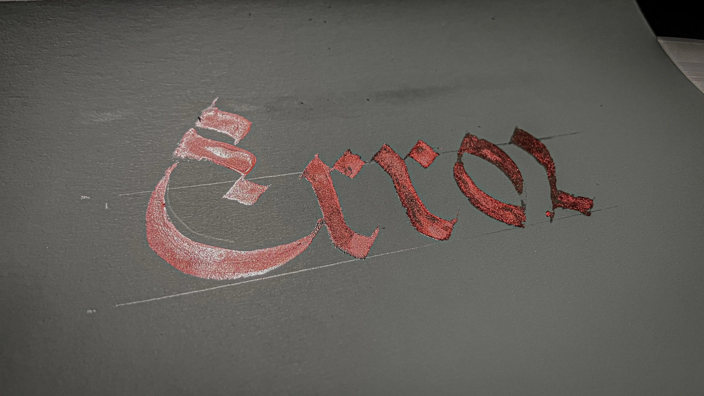

Joanna Zhou
·University of Washington·
·Electrical & Computer Engineering·
·Researcher·
·Calligraphy Artist·
The above is my lastest shader project created using Shadertoy. Feel free to subscribe me or check out my past work! I will continue to produce more interesting stuff in the future.
A shader is a computer program that runs on a graphics processing unit (GPU) to calculate rendering effects. It requires a sophisticated mixed application of math, coding, and visual art knowledge, which is exactly why it attracts me so much.
After all, everything is about Math.
Project summary
SOLIDWORKS
MATLAB
Java
Python
C
HTML
CSS
Clinical Research
3D Printing
Neural Engineering
SOLIDWORKS
MATLAB
Java
Python
C
HTML
CSS
Clinical Research
3D Printing
Neural Engineering
Leadership
Verilog
FPGA
Digital Design
Embedded System
Altium
PCB Design
Soldering
Filter Design
Computational Neuroscience
SPICE
VCS
SpyGlass
Verdi
Leadership
Verilog
FPGA
Digital Design
Embedded System
Altium
PCB Design
Soldering
Filter Design
Computational Neuroscience
SPICE
VCS
SpyGlass
Verdi
Current
Summer 2025
Spring 2025
Winter 2025
Summer 2024
Spring 2024
Winter 2024
Autumn 2023
Gallery


- 